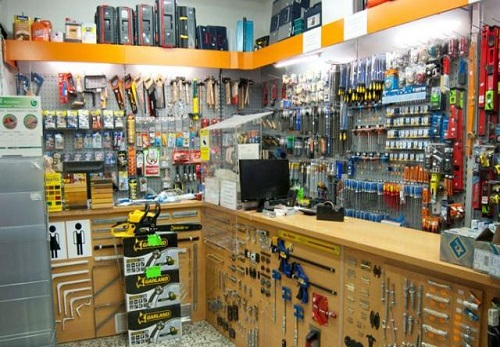
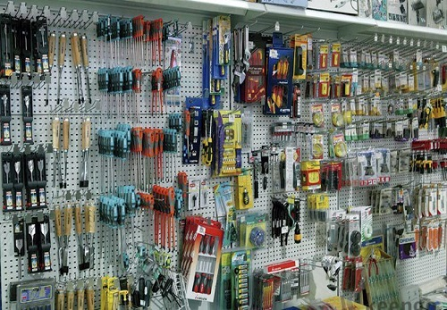
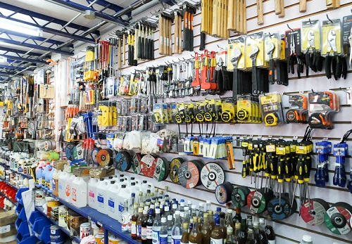

Fierrito nace en 1989 con la inauguración de la ferretería familiar fundada por mi abuelo Pedro E. Prinos oriundo de Puerto San Julián Prov. De Santa Cruz, al principio solo atendido por sus dueños. Las crisis sucedidas a lo largo de los años no fueron impedimento para poder seguir desarrollando nuestra actividad. Razón por la cual en el año 2001 abrimos nuestra primer sucursal en la ciudad de Buenos Aires la cuál fue víctima de los incidentes que se desarrollaron en el país.
Sin embargo, ante esta adversidad vimos la posibilidad/oportunidad de ser los pioneros en la comercialización del hierro pero de una manera online.
Con el crecimiento sostenido durante tanto años, hoy en día es la empresa más reconocida a nivel nacional en el comercio de venta de hierros y aceros. Actualmente atendido por su tercera generación nos encontramos en un proceso de apertura de nuevas sucursales en el interior del país. Siempre atentos a los requerimientos de nuestros clientes y con proyectos de expandirnos a nivel internacional.


